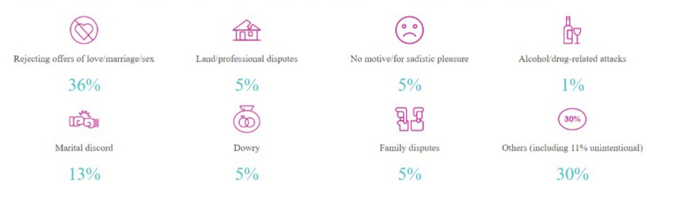

Our Vision
The vision of The Lehar Foundation is primarily the Social inclusion of our attacked heroes, and bringing out the powerful women who despite the odds are shining through their grit and determination to become self reliant.
We shall be doing every bit contribution towards uplifting them through- promoting their socio-entrepreneurial projects and brewing ventures, strengthening them through legal aids and rights, providing them medical assistance and funds for surgeries, training them for bagging high end jobs as well as emotionally nurturing them post trauma.
Our team brims with utmost zeal, compassion and vivid perspective to bring about the changes we wish to see and as a whole become an epitome of courageous spirit. As a family, we plan to emerge and grow stronger by conquering every vision and drawing into reality.
Our Mission
The Lehar Foundation tries to fabricate awareness and advance commitment of in differently abled women in profitable monetary exercises. In this Global Pandemic it focuses on social inclusion keeping in mind of social distancing by giving them platform to interact, exchange their ideas and engage themselves in different activities.It points explicitly, through vocational training, personality enhancement and skills development programs, to offer work to such women in an inclusive workspace.
Mainstreaming is a key center zone, and we look to join this through different activities at Lehar Foundation.
Our Approach
- In between lockdown, providing Legal Advice and counselling to them through online platforms when there families are the accused in Acid Attack. We give them support how to come out and seek help in this difficult scenario.
- Providing first aid guidelines for those who were victims of acid attack in this lockdown and can't go out for immediate medical help.
- Hiring and job opportunities to the survivors in between lockdown, where they are hiring interns so that they can work from home and support their families. The companies have claimed that they will hire the acid attack survivors after global lockdown and provide them trainings for their jobs.
- Giving educational tutorials coupons like Computer Science and English for their preparation of upcoming jobs.
- In between this COVID-19, they are helpless and lack resources to learn anything new. We are providing them resources to develop their personality and skills.
- Survivors are socially neglected. It is important to aware the general public regarding their Ventures, NGOs and businesses.
Amidst COVID-19, We recognise that survivors are not defined by the effects of acid attacks, by the actions of their perpetrators.
We aim to socially include the survivors so that to give them a ray of hope for their future. This includes :-
Don't wait now. See what's store in for you. Register your account!
Immediate First Aid (At Home) Guidelines
- The most important thing is to douse the victim in running water, rather than use a wet cloth as water dilutes the acid.
- If you witness an attack, keep your own safety in mind so that you don't become secondary victims.
- If you see someone exposed to acid don't brush it off with your hands, or if the substance is in powder form just brush it off using a piece of clothing
- Take off any clothes/jewellery that have made contact with the acid
- As tempting as it is to add cream to give some relief, this could affect the treatment prescribed by doctors.
- After the acid is washed off, applying an alkali solution would be useful to neutralize the acid. (Baking soda and water) and loosely wrap the burn area in sterilised gauze, to prevent contamination.
- After hospital treatment, patients are advised to stick to a strict aftercare regime as advised.
So, What's the ROOT CAUSE?
According to the Acid Survivors Foundation India, the motives behind acid attacks range from something as simple as a girl rejecting a boy’s gestures of affection, to more deep-seated cultural issues such as dowry. While vengeance is a key reason, there are several other causes, as shown below.

IT’S TIME TO ENABLE CHANGE
Acid attacks have lifelong repercussions that are very difficult to ignore. That’s why humanitarians across the country feel compelled to act, and this has led to the birth of numerous institutions and programmes that help these women take control of their lives again.
Even so, the question begs asking – is this enough?
In the current scenario, the focus is on helping women after an attack. However, the issue needs a more holistic approach: one that directs its efforts at changing mindsets, demanding more stringent laws, and rehabilitating survivors effectively.
It is this need that has led to the birth of LEHAR. We aim to bring people together, channel their energies, and build a safer world for women.
.png)